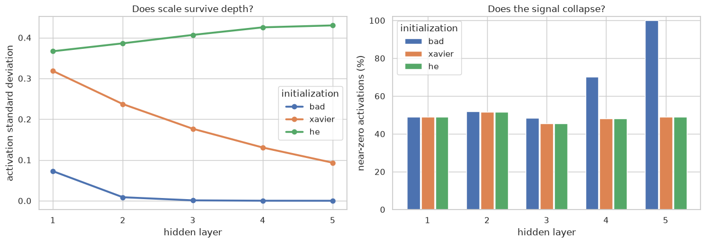
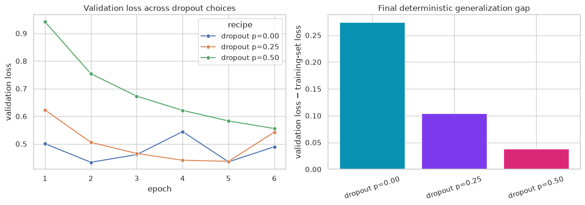

One session · 1h30 · guided PyTorch experiment · decisions before syntax
A six-layer image classifier is training badly. Your job is to diagnose it, change one mechanism at a time, and defend a final training recipe with plots.
PyTorch is provided infrastructure today. Read each supplied block by its purpose, then run it. You are not expected to reproduce its syntax. Tensors, modules, data loaders, and training loops become the subject of the next chapter.
Your work is deliberately small: make predictions, change highlighted configuration values, run controlled experiments, and interpret evidence.
Session map
Time
Decision
Evidence
0–10 min
What are we training?
image gallery and class counts
10–25 min
Is the initial signal healthy?
activation scale and signal collapse
25–50 min
Which mechanism repairs training?
aligned train/validation curves
50–65 min
Why do modes matter?
repeated predictions in train/eval
65–80 min
How much dropout?
generalization-gap sweep
80–90 min
What would you deploy?
dashboard and exit ticket
0 — Start the laboratory
The next cell imports the tools, fixes randomness, and defines the visual style. Run it; there is nothing to implement.
tensor.to(DEVICE) → put numbers where computation happens
model(images) → ask the network for predictions
loss.backward() → compute gradients by backpropagation
optimizer.step() → update the parameters
Treat these as named operations, not syntax to memorize. We will open this black box next week.
1 — Meet the evidence
We use Fashion-MNIST: 28×28 grayscale images in ten classes. The supplied cell creates one fixed training/validation split and a smaller session-sized subset so every experiment fits the same 90-minute budget.
# YOUR DECISION: keep all three for a controlled comparison.INITIALIZATIONS = ["bad", "xavier", "he"]activation_data = {method: activation_probe(method) for method in INITIALIZATIONS}fig, axes = plt.subplots(1, 2, figsize=(13, 4.6))layers = np.arange(1, 6)plot_colors = {"bad": "#4c72b0", "xavier": "#dd8452", "he": "#55a868"}for offset, method inzip((-0.24, 0.0, 0.24), INITIALIZATIONS): stds = [values.std() for values in activation_data[method]] axes[0].plot(layers, stds, marker="o", lw=2.5, color=plot_colors[method], label=method) near_zero = [(np.abs(values) <1e-4).mean() *100for values in activation_data[method]]# Side-by-side bars keep Xavier visible even when it is numerically close# to He (both naturally send about half their values to zero after ReLU). axes[1].bar(layers + offset, near_zero, width=.22, color=plot_colors[method], label=method)axes[0].set(xlabel="hidden layer", ylabel="activation standard deviation", title="Does scale survive depth?", xticks=layers)axes[1].set(xlabel="hidden layer", ylabel="near-zero activations (%)", title="Does the signal collapse?", xticks=layers, ylim=(0, 102))for ax in axes: ax.legend(title="initialization")fig.tight_layout(); save_preview(fig, "initialization-diagnostics.png"); plt.show()

Interpret
Which curve best preserves a comparable scale through depth?
Why does Xavier not exactly target the same variance as He for ReLU?
What evidence warns you before training that the bad initialization is risky?
3 — Repair training one mechanism at a time
Every run receives the same images, seed, architecture width, SGD optimizer, and eight-epoch budget. The labels describe the only intended changes.
The long next cell is the training instrument. Read its comments once, then run it. Next week we will rebuild it line by line.
Where is the factor \(1/q\) applied in PyTorch’s inverted dropout?
What would be wrong with reporting validation loss while the model remained in training mode?
5 — Choose dropout using validation evidence
More regularization is not automatically better. Choose three probabilities to test. Keep 0.0 as the control and avoid 1.0, which would discard every activation.
# YOUR DECISION: edit these three values, then predict the best validation loss.DROPOUT_PROBABILITIES = [0.0, 0.25, 0.50]dropout_runs, dropout_models = {}, {}train_eval_loader = DataLoader(train_set, batch_size=256, shuffle=False, num_workers=0)for p in DROPOUT_PROBABILITIES: recipe = Recipe(f"dropout p={p:.2f}", "he", batch_norm=True, dropout=p) model, dropout_runs[recipe.name] = train_recipe(recipe, epochs=6) dropout_models[recipe.name] = modeldropout_frame = pd.concat(dropout_runs.values(), ignore_index=True)final = dropout_frame.groupby("recipe", sort=False).tail(1).copy()criterion = nn.CrossEntropyLoss()final["train_eval_loss"] = [ evaluate(dropout_models[name], train_eval_loader, criterion)[0] for name in final.recipe]final["generalization_gap"] = final.val_loss - final.train_eval_lossfig, axes = plt.subplots(1, 2, figsize=(12.5, 4.5))sns.lineplot(data=dropout_frame, x="epoch", y="val_loss", hue="recipe", marker="o", ax=axes[0])axes[0].set(title="Validation loss across dropout choices", ylabel="validation loss")axes[1].bar(final.recipe, final.generalization_gap, color=["#0891b2", "#7c3aed", "#db2777"])axes[1].axhline(0, color="black", lw=1)axes[1].set(title="Final deterministic generalization gap", ylabel="validation loss − training-set loss")axes[1].tick_params(axis="x", rotation=18)fig.tight_layout(); save_preview(fig, "dropout-sweep.png"); plt.show()final[["recipe", "train_eval_loss", "val_loss", "val_accuracy", "generalization_gap"]].round(3)

recipe
train_eval_loss
val_loss
val_accuracy
generalization_gap
5
dropout p=0.00
0.215
0.490
0.836
0.274
11
dropout p=0.25
0.438
0.543
0.802
0.104
17
dropout p=0.50
0.517
0.555
0.793
0.038
Make a decision
Select one dropout probability for this run. Support the choice with both training and validation evidence. If two choices are close, prefer the simpler claim: this short experiment may not distinguish them reliably.
Chosen \(p\) and evidence: …
6 — Assemble and inspect the controlled run
The final recipe adds mechanisms that address different problems:
He initialization and BatchNorm control signal propagation;
dropout and weight decay regularize the fitted solution;
warmup and cosine decay control update scale through time;
early stopping remembers the best validation checkpoint.